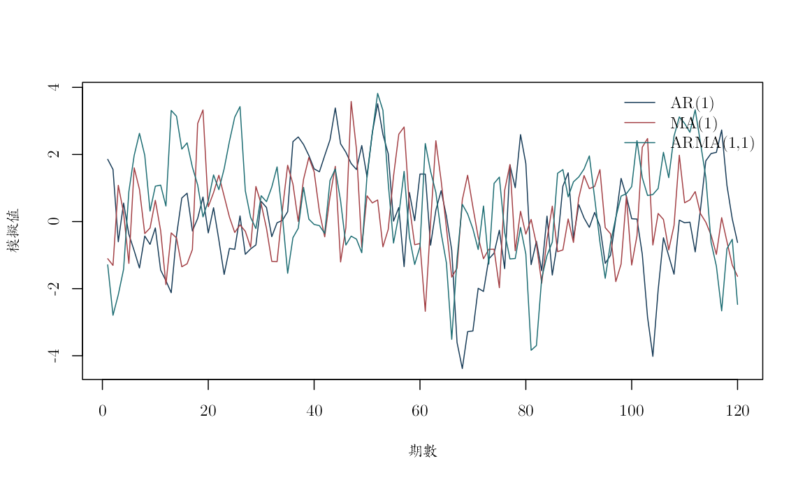
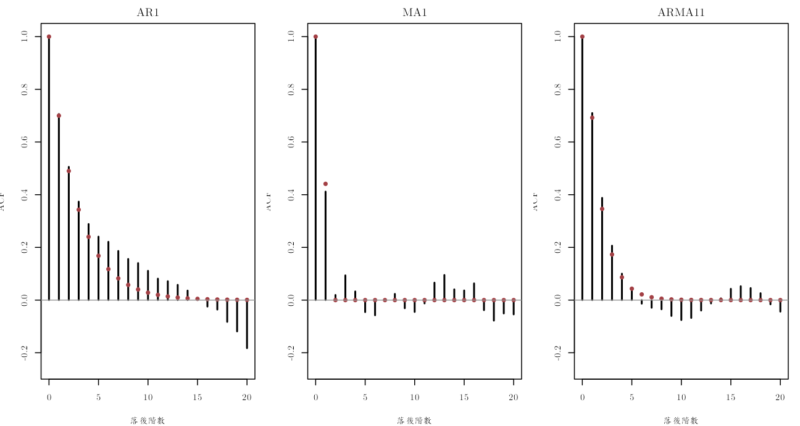
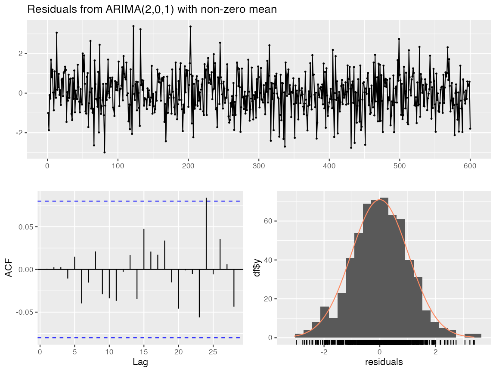
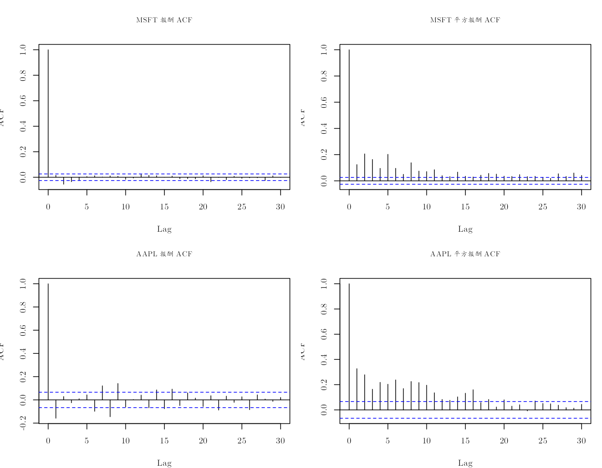

《財務時間序列分析》線上附錄
R04：AR、MA 與 ARMA：理論與真實報酬
本附錄對應第 4--6 章。第一部分保留一個小型固定種子模擬，因為只有在資料生成參數已知時，才能直接核對 AR、MA 與 ARMA 的理論自相關函數（autocorrelation function, ACF）。第二部分改用真實的 MSFT 與 AAPL 日簡單報酬，檢查樣本 ACF 與 Ljung--Box 統計量。
MSFT 樣本為 1986-03-14 至 2008-12-31，共 5,752 筆；AAPL 樣本為 2019-01-03 至 2022-06-22，共 874 筆有效報酬。兩者單位都是日簡單報酬的小數。資料來源分別是 Tsay 教科書網站及原課程 S&P 500 價格檔，詳見 data/DATA_SOURCES.md。以下相關性是歷史描述，不能作因果解釋。
knitr::opts_chunk$set(
echo = TRUE, message = FALSE, warning = FALSE,
fig.width = 8, fig.height = 4.8,
dev = "ragg_png", dpi = 144,
dev.args = list(background = "white")
)
set.seed(20260716)
root_candidates <- c(".", "..")
is_root <- vapply(root_candidates, function(x) {
file.exists(file.path(x, "main.tex"))
}, logical(1))
stopifnot(any(is_root))
project_root <- root_candidates[which(is_root)[1]]
project_path <- function(...) file.path(project_root, ...)
stopifnot(
requireNamespace("ragg", quietly = TRUE),
requireNamespace("systemfonts", quietly = TRUE)
)
cwtex_file <- project_path("assets", "fonts", "cwTeXQKai-Medium.ttf")
stopifnot(file.exists(cwtex_file))
if (!"cwTeX Online" %in% systemfonts::registry_fonts()$family) {
systemfonts::register_font("cwTeX Online", cwtex_file)
}
plot_family <- "cwTeX Online"
小型真值模擬#
設定三個平均數為零、創新標準差為 1 的資料生成過程：
\[ \begin{aligned} \text{AR(1)} &: Y_t=0.70Y_{t-1}+a_t,\\ \text{MA(1)} &: Y_t=a_t+0.60a_{t-1},\\ \text{ARMA(1,1)} &: Y_t=0.50Y_{t-1}+a_t+0.40a_{t-1}. \end{aligned} \]
模擬只用來核對公式與程式，不是金融市場的實證證據。
n_sim <- 600L
phi_ar <- 0.70
theta_ma <- 0.60
phi_arma <- 0.50
theta_arma <- 0.40
ar1 <- as.numeric(arima.sim(
model = list(ar = phi_ar), n = n_sim, sd = 1
))
ma1 <- as.numeric(arima.sim(
model = list(ma = theta_ma), n = n_sim, sd = 1
))
arma11 <- as.numeric(arima.sim(
model = list(ar = phi_arma, ma = theta_arma),
n = n_sim, sd = 1
))
simulation_table <- data.frame(
模型 = c("AR(1)", "MA(1)", "ARMA(1,1)"),
樣本平均數 = c(mean(ar1), mean(ma1), mean(arma11)),
樣本變異數 = c(var(ar1), var(ma1), var(arma11)),
理論變異數 = c(
1 / (1 - phi_ar^2),
1 + theta_ma^2,
1 + (phi_arma + theta_arma)^2 / (1 - phi_arma^2)
),
check.names = FALSE
)
knitr::kable(simulation_table, digits = 4)
| 模型 | 樣本平均數 | 樣本變異數 | 理論變異數 |
|---|---|---|---|
| AR(1) | 0.0579 | 2.2077 | 1.9608 |
| MA(1) | -0.0507 | 1.2948 | 1.3600 |
| ARMA(1,1) | 0.1914 | 2.2633 | 2.0800 |
old_par <- par(family = plot_family)
matplot(
1:120,
cbind(ar1[1:120], ma1[1:120], arma11[1:120]),
type = "l", lty = 1, lwd = 1,
col = c("#173B57", "#A34045", "#1D6D73"),
xlab = "期數", ylab = "模擬值"
)
legend(
"topright", c("AR(1)", "MA(1)", "ARMA(1,1)"),
col = c("#173B57", "#A34045", "#1D6D73"),
lty = 1, bty = "n"
)

par(old_par)
理論 ACF 與樣本 ACF#
lag_max <- 20L
series_sim <- list(AR1 = ar1, MA1 = ma1, ARMA11 = arma11)
theory_sim <- list(
AR1 = ARMAacf(ar = phi_ar, lag.max = lag_max),
MA1 = ARMAacf(ma = theta_ma, lag.max = lag_max),
ARMA11 = ARMAacf(
ar = phi_arma, ma = theta_arma, lag.max = lag_max
)
)
old_par <- par(
mfrow = c(1, 3), mar = c(4, 3.5, 2, 1),
family = plot_family
)
for (nm in names(series_sim)) {
sample_acf <- as.numeric(acf(
series_sim[[nm]], lag.max = lag_max, plot = FALSE
)$acf)
plot(
0:lag_max, sample_acf, type = "h", lwd = 2,
ylim = c(-0.25, 1), xlab = "落後階數",
ylab = "ACF", main = nm
)
points(0:lag_max, theory_sim[[nm]], pch = 16, col = "#A34045")
abline(h = 0, col = "gray60")
}

par(old_par)
MA(1) 的母體 ACF 在一階之後為零，但有限樣本柱線仍會因抽樣誤差偏離零。AR 與 ARMA 的 ACF 通常拖尾。
原課程套件捷徑：forecast#
原課程的
slides/L05_Forecasting_and_CV/W1L5_R_simulated_AR_ARMA_and_then_autoARMA.R
在模擬 AR 與 ARMA 後，以 forecast::auto.arima() 自動選階、
checkresiduals() 檢查殘差，再以 forecast() 形成預測。下列程式對相同的固定種子模擬樣本重現這條套件工作流。原程式寫成 seasonal = "FALSE"；這裡改用意義明確的邏輯值 seasonal = FALSE。
stopifnot(requireNamespace("forecast", quietly = TRUE))
true_orders <- list(
AR1 = c(p = 1, d = 0, q = 0),
MA1 = c(p = 0, d = 0, q = 1),
ARMA11 = c(p = 1, d = 0, q = 1)
)
true_coefficients <- list(
AR1 = c(ar1 = phi_ar, ma1 = NA_real_),
MA1 = c(ar1 = NA_real_, ma1 = theta_ma),
ARMA11 = c(ar1 = phi_arma, ma1 = theta_arma)
)
auto_models <- lapply(series_sim, function(z) {
forecast::auto.arima(ts(z), seasonal = FALSE)
})
auto_selection <- do.call(rbind, lapply(names(auto_models), function(nm) {
fit <- auto_models[[nm]]
selected <- forecast::arimaorder(fit)[c("p", "d", "q")]
b <- coef(fit)
selected_coefficients <- c(
ar1 = if ("ar1" %in% names(b)) unname(b["ar1"]) else NA_real_,
ma1 = if ("ma1" %in% names(b)) unname(b["ma1"]) else NA_real_
)
data.frame(
模擬真值 = nm,
真p = true_orders[[nm]]["p"],
真d = true_orders[[nm]]["d"],
真q = true_orders[[nm]]["q"],
自動p = selected["p"],
自動d = selected["d"],
自動q = selected["q"],
真ar1 = true_coefficients[[nm]]["ar1"],
估計ar1 = selected_coefficients["ar1"],
真ma1 = true_coefficients[[nm]]["ma1"],
估計ma1 = selected_coefficients["ma1"],
AICc = fit$aicc,
check.names = FALSE
)
}))
row.names(auto_selection) <- NULL
knitr::kable(auto_selection, digits = 4)
| 模擬真值 | 真p | 真d | 真q | 自動p | 自動d | 自動q | 真ar1 | 估計ar1 | 真ma1 | 估計ma1 | AICc |
|---|---|---|---|---|---|---|---|---|---|---|---|
| AR1 | 1 | 0 | 0 | 1 | 0 | 0 | 0.7 | 0.7080 | NA | NA | 1765.287 |
| MA1 | 0 | 0 | 1 | 0 | 0 | 1 | NA | NA | 0.6 | 0.5866 | 1702.242 |
| ARMA11 | 1 | 0 | 1 | 2 | 0 | 1 | 0.5 | 0.5441 | 0.4 | 0.3538 | 1742.725 |
forecast::checkresiduals(auto_models$ARMA11, lag = 20)

##
## Ljung-Box test
##
## data: Residuals from ARIMA(2,0,1) with non-zero mean
## Q* = 8.5675, df = 17, p-value = 0.9529
##
## Model df: 3. Total lags used: 20
course_forecast <- forecast::forecast(
auto_models$ARMA11,
h = 30,
level = c(80, 95)
)
forecast_preview <- data.frame(
期距 = seq_len(6),
點預測 = as.numeric(head(course_forecast$mean, 6)),
下界80 = as.numeric(head(course_forecast$lower[, "80%"], 6)),
上界80 = as.numeric(head(course_forecast$upper[, "80%"], 6)),
下界95 = as.numeric(head(course_forecast$lower[, "95%"], 6)),
上界95 = as.numeric(head(course_forecast$upper[, "95%"], 6)),
check.names = FALSE
)
knitr::kable(forecast_preview, digits = 4)
| 期距 | 點預測 | 下界80 | 上界80 | 下界95 | 上界95 |
|---|---|---|---|---|---|
| 1 | -0.9432 | -2.2606 | 0.3742 | -2.9579 | 1.0715 |
| 2 | -0.4310 | -2.2015 | 1.3395 | -3.1387 | 2.2767 |
| 3 | -0.1528 | -2.0377 | 1.7321 | -3.0355 | 2.7299 |
| 4 | -0.0002 | -1.9182 | 1.9177 | -2.9335 | 2.9331 |
| 5 | 0.0834 | -1.8444 | 2.0113 | -2.8649 | 3.0318 |
| 6 | 0.1293 | -1.8014 | 2.0601 | -2.8235 | 3.0822 |
套件版節省了逐一估計候選模型與整理診斷的程式，但不會讓階數「必然」回到資料生成真值。auto.arima() 是依有限樣本的資訊準則選擇模型；上表與已知真值的差異，正好顯示模型選擇也有抽樣不確定性。checkresiduals() 只檢查特定殘差特徵；預測區間還依賴已選模型與創新分配的假設。
根與衝擊反應的程式核對#
root_table <- data.frame(
部分 = c("AR(1) 的 AR 根", "MA(1) 的 MA 根", "ARMA 的 AR 根", "ARMA 的 MA 根"),
根 = Re(c(
polyroot(c(1, -phi_ar)),
polyroot(c(1, theta_ma)),
polyroot(c(1, -phi_arma)),
polyroot(c(1, theta_arma))
)),
check.names = FALSE
)
root_table$模 <- abs(root_table$根)
knitr::kable(root_table, digits = 4)
| 部分 | 根 | 模 |
|---|---|---|
| AR(1) 的 AR 根 | 1.4286 | 1.4286 |
| MA(1) 的 MA 根 | -1.6667 | 1.6667 |
| ARMA 的 AR 根 | 2.0000 | 2.0000 |
| ARMA 的 MA 根 | -2.5000 | 2.5000 |
stopifnot(all(root_table$模 > 1))
j <- 0:12
psi_manual <- c(1, (phi_arma + theta_arma) * phi_arma^(0:11))
psi_r <- c(1, ARMAtoMA(
ar = phi_arma, ma = theta_arma, lag.max = 12
))
stopifnot(isTRUE(all.equal(psi_manual, psi_r)))
knitr::kable(data.frame(期距 = j, 手算 = psi_manual, R = psi_r), digits = 6)
| 期距 | 手算 | R |
|---|---|---|
| 0 | 1.000000 | 1.000000 |
| 1 | 0.900000 | 0.900000 |
| 2 | 0.450000 | 0.450000 |
| 3 | 0.225000 | 0.225000 |
| 4 | 0.112500 | 0.112500 |
| 5 | 0.056250 | 0.056250 |
| 6 | 0.028125 | 0.028125 |
| 7 | 0.014062 | 0.014062 |
| 8 | 0.007031 | 0.007031 |
| 9 | 0.003516 | 0.003516 |
| 10 | 0.001758 | 0.001758 |
| 11 | 0.000879 | 0.000879 |
| 12 | 0.000439 | 0.000439 |
AR 根在單位圓外對應因果定態表示；MA 根在單位圓外對應可逆表示。這兩個限制不能混為一談。
真實 MSFT 與 AAPL 報酬#
msft <- read.csv(project_path(
"data", "processed", "msft_daily_returns_1986_2008.csv"
))
msft$date <- as.Date(msft$date)
aapl <- read.csv(project_path(
"data", "processed", "aapl_adjusted_daily_2019_2022.csv"
))
aapl$date <- as.Date(aapl$date)
aapl <- aapl[is.finite(aapl$simple_return), ]
stopifnot(
all(diff(msft$date) > 0), !anyNA(msft$simple_return),
all(diff(aapl$date) > 0), !anyNA(aapl$simple_return)
)
real_profile <- data.frame(
序列 = c("MSFT", "AAPL"),
起日 = c(min(msft$date), min(aapl$date)),
迄日 = c(max(msft$date), max(aapl$date)),
觀察值 = c(nrow(msft), nrow(aapl)),
單位 = "日簡單報酬，小數",
來源 = c("Tsay d-msft8608.txt", "原課程 S&P 500 價格檔"),
check.names = FALSE
)
knitr::kable(real_profile)
| 序列 | 起日 | 迄日 | 觀察值 | 單位 | 來源 |
|---|---|---|---|---|---|
| MSFT | 1986-03-14 | 2008-12-31 | 5752 | 日簡單報酬，小數 | Tsay d-msft8608.txt |
| AAPL | 2019-01-03 | 2022-06-22 | 874 | 日簡單報酬，小數 | 原課程 S&P 500 價格檔 |
real_series <- list(
MSFT = msft$simple_return,
AAPL = aapl$simple_return
)
old_par <- par(
mfrow = c(2, 2), mar = c(4, 3.5, 4, 1),
family = plot_family, cex.main = 0.85
)
for (nm in names(real_series)) {
z <- real_series[[nm]]
acf(z, lag.max = 30, main = paste(nm, "報酬 ACF"))
acf(z^2, lag.max = 30, main = paste(nm, "平方報酬 ACF"))
}

par(old_par)
Ljung--Box 聯合檢查#
lb_row <- function(x, label) {
q_return <- Box.test(x, lag = 20, type = "Ljung-Box")
q_square <- Box.test(x^2, lag = 20, type = "Ljung-Box")
data.frame(
序列 = label,
Q20_報酬 = unname(q_return$statistic),
p_報酬 = q_return$p.value,
Q20_平方報酬 = unname(q_square$statistic),
p_平方報酬 = q_square$p.value,
check.names = FALSE
)
}
lb_table <- rbind(
lb_row(msft$simple_return, "MSFT"),
lb_row(aapl$simple_return, "AAPL")
)
knitr::kable(lb_table, digits = 6)
| 序列 | Q20_報酬 | p_報酬 | Q20_平方報酬 | p_平方報酬 |
|---|---|---|---|---|
| MSFT | 41.3004 | 0.003408 | 1156.8001 | 0 |
| AAPL | 119.5426 | 0.000000 | 549.4038 | 0 |
在這兩個固定樣本中，報酬與平方報酬的 20 階聯合零自相關限制都遭拒絕；平方報酬的統計量尤其大。這說明真實資料不應被縮減成「只看模擬 ACF」的練習。
拒絕「前 20 階自相關同時為零」只表示這組限制與樣本不相容。它不告訴我們應選哪一個 ARMA 階數，也不保證相關性足以克服交易成本。平方報酬的相依則提示第 11--12 章的條件變異模型，而不是把它誤當成平均報酬的因果機制。